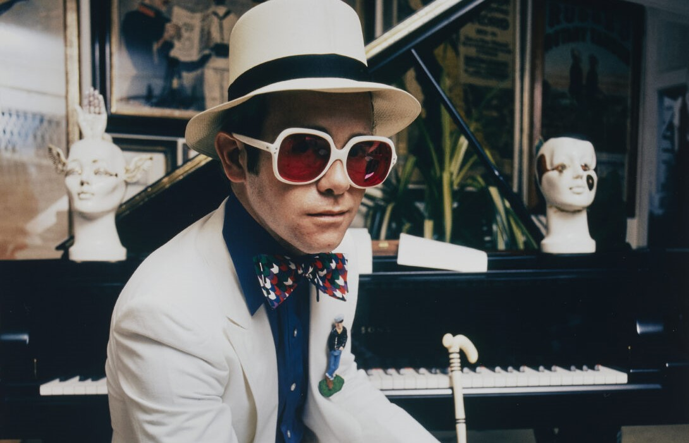

Gustos Musicales
En cuanto a mis gustos musicales, no me inclino demasiado hacia ningún género o estilo en particular, ya que puedo disfrutar prácticamente cualquier tipo de música. Sin embargo, tengo dos grandes favoritos: Elton John, cuyo talento y legado musical siempre me inspiran, y El Cuarteto de Nos, una banda que me encanta por su originalidad y las letras ingeniosas de sus canciones. Me gusta explorar diferentes sonidos y disfrutar de la diversidad que la música ofrece.